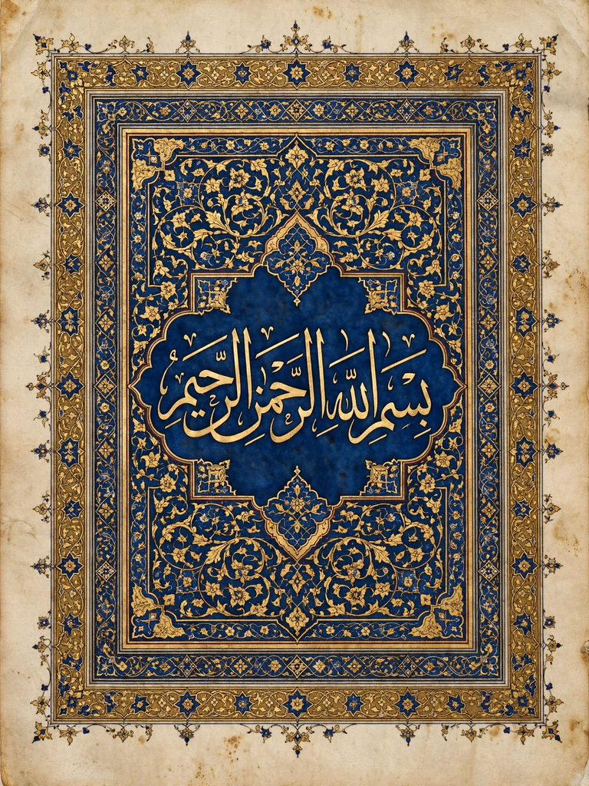

From Wikipedia, the free encyclopedia

| Al-Qadr — القدر | |
|---|---|
| Classification | Meccan |
| Position | Juz' 30; Surah 97 of the Quran |
| No. of verses | 5 |
| Subject | Laylat al-Qadr (the Night of Decree) |
| Other names | "The Night of Power", "The Majesty" |
Al-Qadr (Arabic: القدر, "The Decree" or "The Power") is the 97th chapter (surah) of the Quran, consisting of five verses (ayat). It is traditionally classified as a Meccan surah, revealed before the Hijrah. The chapter describes the first revelation of the Quran to the Prophet Muhammad during Laylat al-Qadr, the "Night of Decree" — also translated as the Night of Power, Destiny, or Majesty — which falls in the last ten nights of Ramadan and is described in the surah as "better than a thousand months."
The surah is short and emphatic. In a common English rendering it reads:
1. Indeed, We sent it [the Quran] down during the Night of Decree.
2. And what can make you know what the Night of Decree is?
3. The Night of Decree is better than a thousand months.
4. The angels and the Spirit descend therein by permission of their Lord for every matter.
5. Peace it is until the emergence of dawn.
The Arabic word qadr carries a range of meanings — measure, decree, destiny, power, and honour — and translations of the surah's title and of the night's name vary accordingly. "The Spirit" (ar-Ruh) in verse 4 is identified by most commentators with the angel Gabriel (Jibril).
According to Islamic tradition, the first verses of the Quran were revealed to Muhammad while he was in retreat in the cave of Hira near Mecca, an event commemorated as occurring on Laylat al-Qadr. Because the surah does not name its subject directly — the opening pronoun "it" (hu in innā anzalnāhu, "We sent it down") has no antecedent in the chapter — commentators have debated its referent, with the overwhelming consensus being the Quran itself, supported by verses elsewhere such as Quran 2:185 ("The month of Ramadan in which was revealed the Quran") and 44:3 ("Indeed, We sent it down during a blessed night").
Laylat al-Qadr is regarded as the holiest night of the Islamic year. Muslims believe that on this night the angels descend, God's decrees for the coming year are apportioned, and worship is rewarded more than the worship of a thousand months (over 83 years). The exact date is not specified; hadith collections place it among the odd-numbered nights of the last ten days of Ramadan — most often the 21st, 23rd, 25th, 27th, or 29th — with the 27th night being the most widely observed. Believers spend the night in prayer (qiyam), recitation, and supplication, and many observe i'tikaf (retreat in the mosque) during the final ten days of the month in order not to miss it.
The surah's brevity and rhythmic intensity have made it one of the most frequently recited chapters in daily prayers. Its teaching also underlies the Quranic doctrine that the scripture's descent occurred both on this single night and gradually over the roughly 23 years of Muhammad's prophethood — reconciled by commentators through the idea of a descent first to the lowest heaven and then piecemeal to the Prophet.